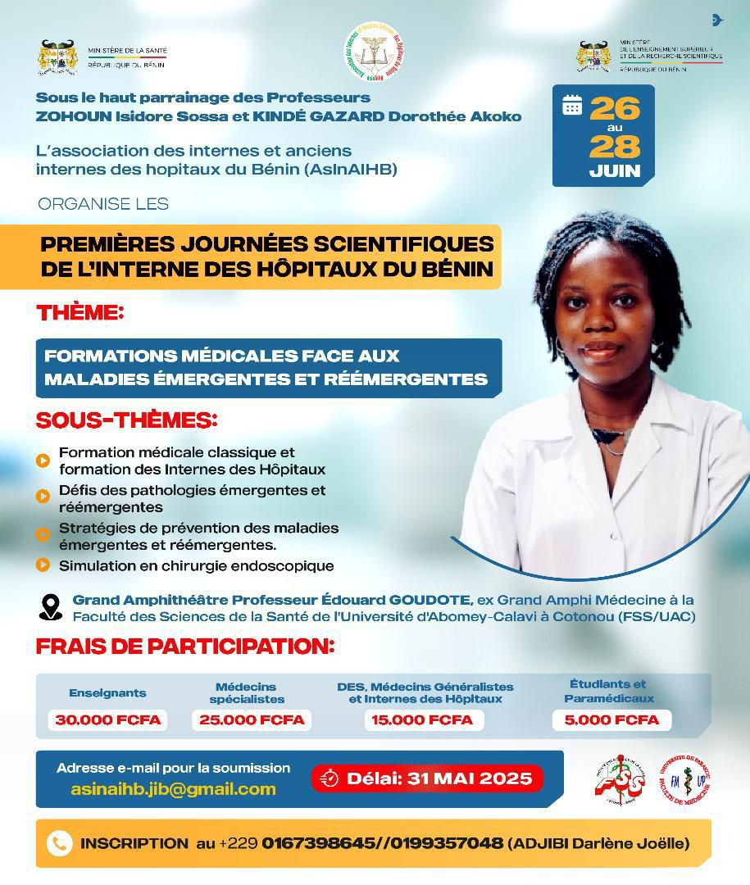

Premières Journées Scientifiques de l’Interne des Hôpitaux du Bénin

Date : Du 26 au 28 juin 2025
Lieu : Grand Amphithéâtre Professeur Édouard GOUDOTE, Faculté des Sciences de la Santé (FSS/UAC), Cotonou
Thème : Formations médicales face aux maladies émergentes et réémergentes
Sous-thèmes :
- Formation médicale classique et formation des Internes des Hôpitaux
- Défis des pathologies émergentes et réémergentes
- Stratégies de prévention des maladies émergentes et réémergentes
- Simulation en chirurgie endoscopique
Frais de participation :
- Enseignants : 30.000 FCFA
- Médecins spécialistes : 25.000 FCFA
- DES, Médecins généralistes, Internes : 15.000 FCFA
- Étudiants et paramédicaux : 5.000 FCFA
Date limite de soumission des résumés : 31 mai 2025
Email : asinaihb.jib@gmail.com
Inscriptions : +229 0167398645 / 0199357048 (ADJIBI Darlène Joëlle)